Stage 1
RGB initialization
Initialize object geometry from multi-view RGB images under natural ambient lighting.
SIGGRAPH Conference Papers 2026
We introduce an active RGB-NIR imaging system and a three-stage inverse rendering pipeline that reconstructs accurate geometry and reflectance under diverse ambient illumination.
POSTECH · *Equal contribution
Overview
Existing inverse rendering methods can be sensitive to uncontrolled ambient lighting. This project uses imperceptible NIR flash illumination to obtain stable point-light shading, while RGB images preserve visible-spectrum appearance for downstream rendering.
The method combines multi-view RGB observations, active NIR flash images, and an RGB-NIR BRDF model to recover geometry, roughness, metallic parameters, diffuse albedo, and environment illumination.
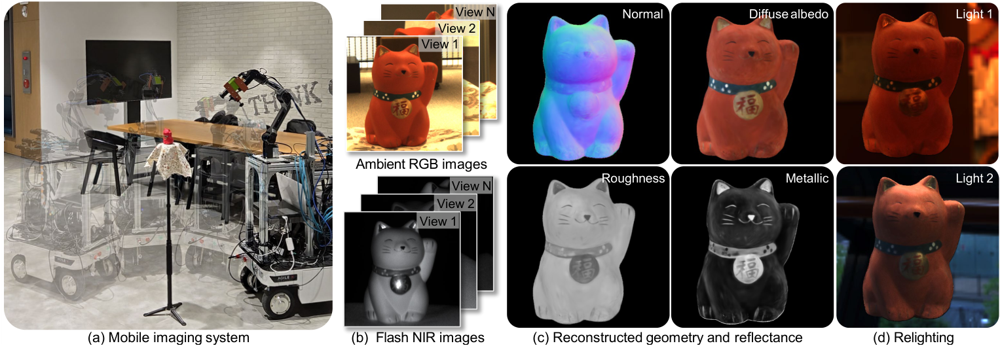
Pipeline
The pipeline proceeds in three stages: RGB-based geometry initialization, NIR flash inverse rendering for robust geometry and reflectance refinement, and RGB environment inverse rendering for visible diffuse albedo and illumination recovery.
Stage 1
Initialize object geometry from multi-view RGB images under natural ambient lighting.
Stage 2
Use flash-only NIR measurements to refine geometry and estimate NIR reflectance.
Stage 3
Recover RGB diffuse albedo and ambient environment maps using the refined reconstruction.
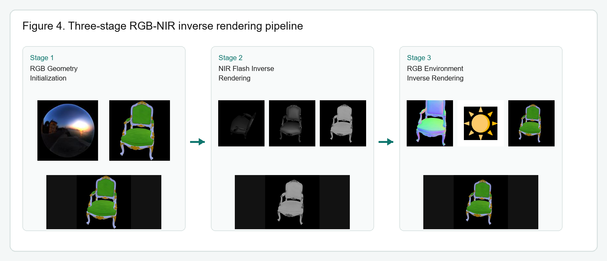
System
The acquisition platform combines a mobile base, robotic arm, pixel-aligned RGB-NIR camera, and synchronized NIR flash. The system scans objects from dense viewpoints while keeping NIR illumination largely invisible to human observers.
Dataset
The dataset contains multi-view RGB-NIR image pairs with active NIR flash under multiple ambient illumination conditions, together with a synthetic counterpart rendered to match the acquisition setup.
Four objects and fourteen ambient scenes, shown as pixel-aligned RGB/NIR depth-warp views.
14 assets
Three synthetic objects and four ambient scenes, using the same RGB/NIR 3D viewer structure.
12 assets
Results
The paper evaluates RGB-NIR inverse rendering through BRDF validation, comparisons with passive and active RGB baselines, ambient-robust reconstruction, real-object relighting, ablations, and stress tests across material and scene complexity.
The RGB-NIR reflectance model is validated against measured material responses, showing how the NIR channel constrains reflectance parameters that are ambiguous in RGB-only observations.
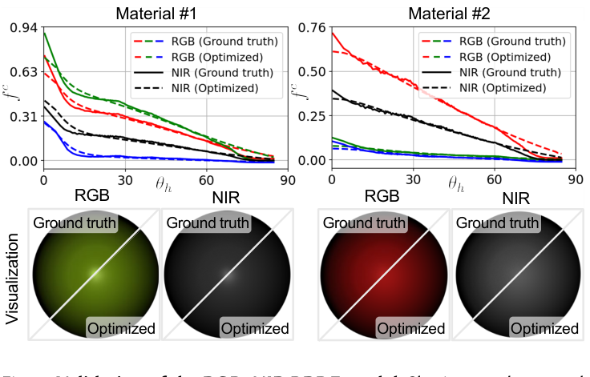
Baseline comparisons cover passive RGB inverse rendering, active RGB-only imaging, and diffusion-based inverse rendering. The result panels compare rendering, albedo, roughness, normals, environment maps, and relighting quality.
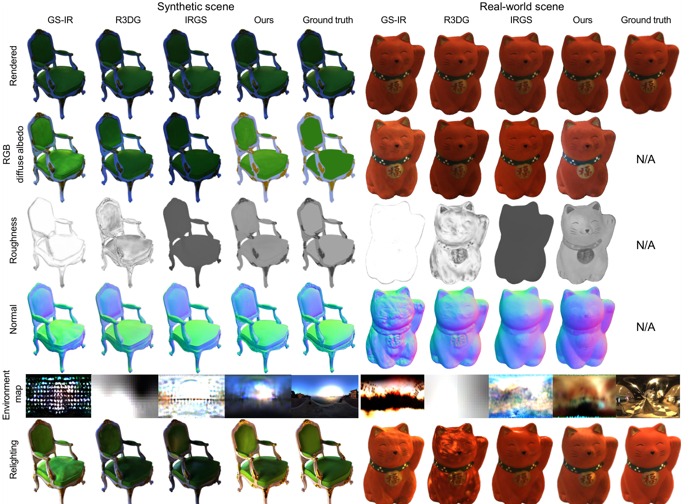
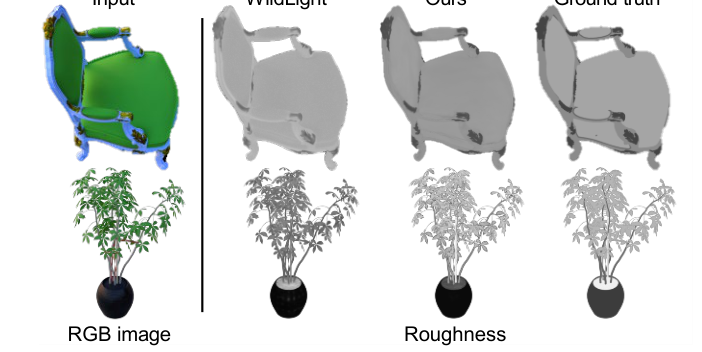
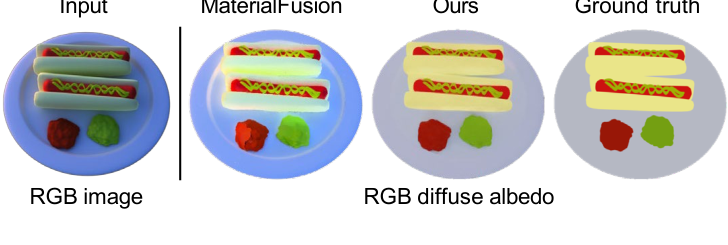
The method is evaluated under changing environment illumination, including controlled real-world captures, synthetic environment maps, and outdoor lighting conditions.
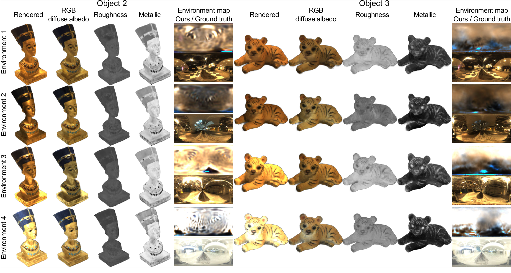
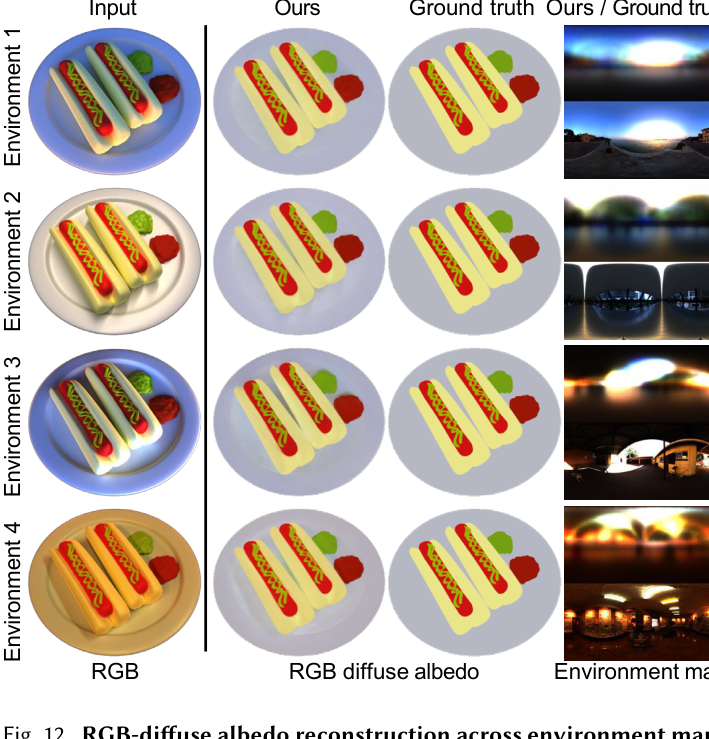
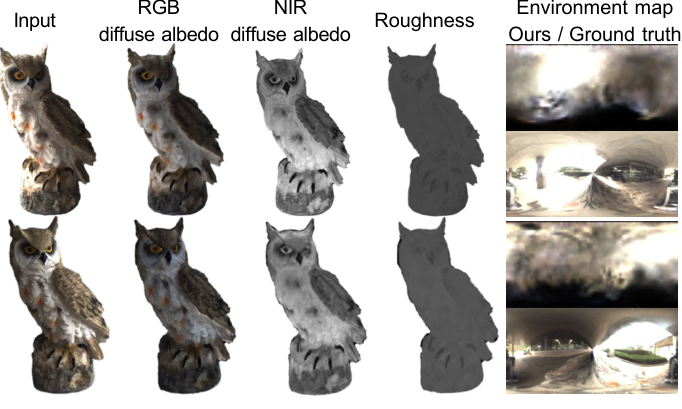
Relighting results visualize how the reconstructed objects respond to new illumination. The video shows point-light relighting quality on a real captured object.
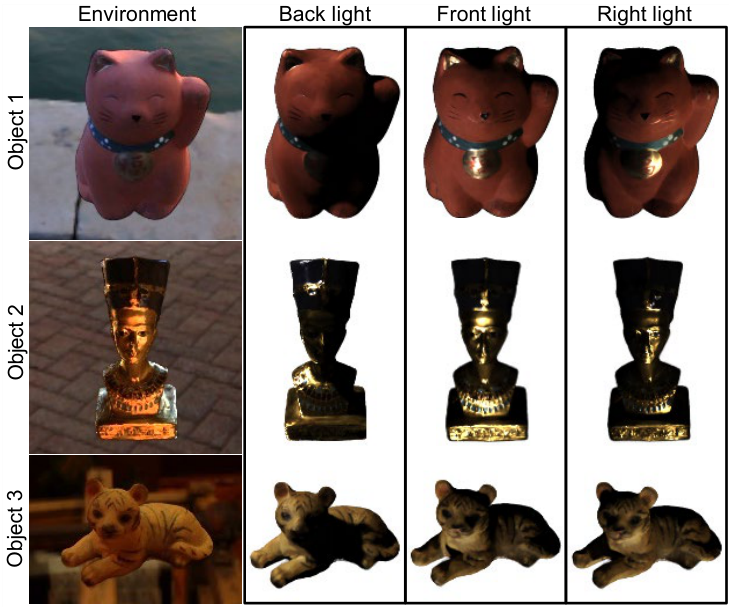
The ablation isolates the contribution of NIR flash observations, showing how the active NIR signal improves decomposition quality under ambient illumination.
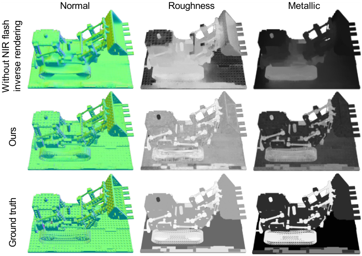
Additional experiments test diffuse, specular, metallic, and multi-object scenes to show how reconstruction behaves as material composition and geometry become more challenging.
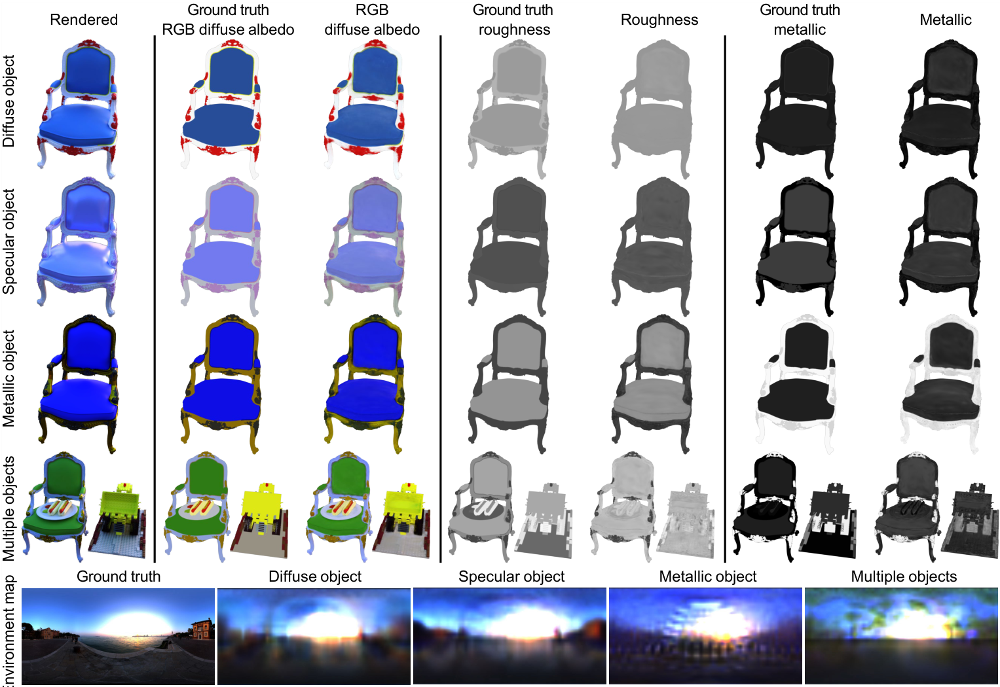
Citation
@inproceedings{chung2026ambient,
title = {Ambient-robust Inverse Rendering using Active RGB-NIR Imaging},
author = {Chung, Hoon-Gyu and Kim, Jinnyeong and Kang, Hyunwoo and Baek, Seung-Hwan},
booktitle = {SIGGRAPH Conference Papers},
year = {2026},
doi = {10.1145/3799902.3811078}
}